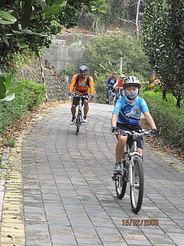
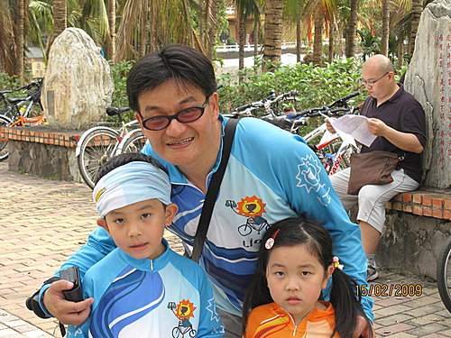
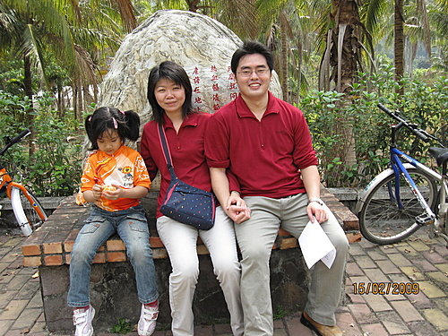
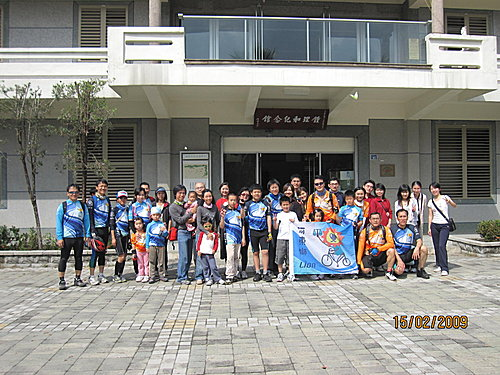
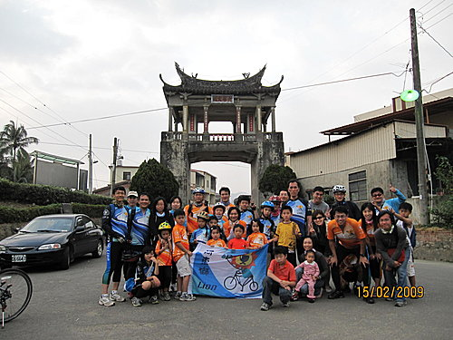

一、活動名稱：美濃單車逍遙遊—老街訪古、菸樓聚落、山水風光人文知性之旅。
二、活動日期：2009.2.15（週日）0900~1700
三、參加人員：河東獅眾獅友暨家眷。
四、騎乘路線：美濃客家文物館—鍾理和紀念館─雙溪熱帶母樹園-原路折返美濃客家文物館─合口味餐廳客家美食—古厝花海─美濃中正湖—美濃窯—敬字亭—美濃老街─東門樓，約25公里 。
美濃客家文物館集合出發，一行人大約50人
陸續抵達鍾理和紀念館

鍾理和紀念館留影大合照



雙溪熱帶母樹林留影

合口味餐廳享受客家美食，合口味在美濃客家餐廳裡頗負盛名，吃起來果然不錯
古厝花海
敬字亭留影
東門樓合影

東門樓前享受美濃清冰
美濃之一 於 2010-01-27 17:42:10 回應
很棒的~團隊 今年~ 之一帶來新的資訊 http://tw.myblog.yahoo.com/ao3aj6/article?mid=912&prev=-1&next=711 活動開鑼了 歡迎再度來到~美濃
智慧勝 於 2009-02-20 22:58:19 回應
影片裡還很多照片我截取一些車隊照片讓您超兄篩選寄到您信箱裡請接收
河東獅 於 2009-02-19 12:36:56 回應
感謝各位獅友及寶眷熱烈的參與美濃之行， 特別是社長超哥的全程規劃參與， 還前往探勘及試吃餐廳。 原本約28公里的行程， 因本人帶錯路致總里程增為33公里， 非常不好意思。 希望這次未完成全程的新伙伴， 還有意猶未盡的獅友， 可多加練習， 5月份的奮起湖鐵道便當之旅， 歡迎再來參加喲。 小獅